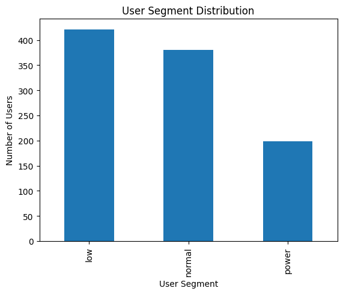
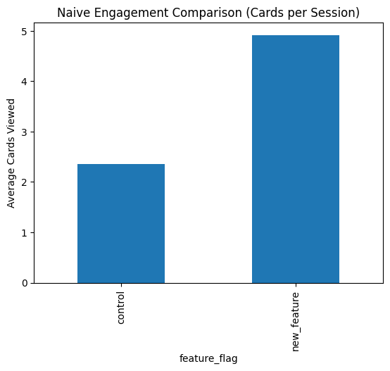
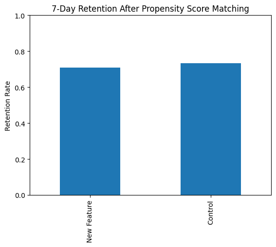

Why the initial engagement signal mattered, and how causal correction changed the decision.
A new feed iteration appeared to drive a ~110–140% lift in engagement, but after correcting for selection bias with propensity score matching, 7-day retention showed no meaningful improvement: the lift came from who received the feature, not the feature itself. Final decision: do not ship.
This case study evaluates a feed-ranking change in a generic consumer social app. The feed is a core surface for engagement and long-term retention, making even small ranking changes high-risk.
The feature introduced more aggressive personalization based on predicted relevance. Exposure was not randomized, making this an observational analysis rather than a clean A/B test.
Users clustered naturally into three behavioral segments.
Infrequent usage, low baseline interaction
Moderate engagement, majority of the base
Highly engaged, critical to platform health
These segments matter because engagement propensity differs sharply across them.

Engagement spikes are diagnostic, not decisive. Success criteria were defined upfront.
Best proxy for habit formation and long-term value.
Useful for understanding behavior, not for making ship decisions.
The decision hinged on whether users returned, not whether they interacted more in a single session.
The analysis relied on two complementary datasets that together made it possible to separate user quality from feature impact.
One row per user. Used to model selection bias and long-term outcomes.
Session-level behavioral data. Used to measure short-term engagement.
Users for retention analysis; sessions for engagement diagnostics.
Baseline behavior measured pre-exposure, outcomes tracked over 7 days post-exposure.
Separating baseline behavior from outcomes makes causal adjustment possible.
Users exposed to the new feature had systematically higher baseline engagement, indicating strong selection bias in feature exposure.
This meant naive engagement comparisons primarily reflected who received the feature, not what the feature caused.
A dashboard view suggested a dramatic engagement win.
At face value, this appears to be a major engagement win. A standard dashboard would strongly suggest shipping.

Takeaway: the lift conflates user quality with feature impact.
Exposure to the new feed was non-random and strongly correlated with baseline engagement.
The comparison measured high-engagement users vs low-engagement users, not the causal effect of the feature.
Analogy: comparing basketball players to accountants and concluding basketball makes people taller.
I applied propensity score matching to approximate a randomized experiment.
Assignment depended on behavior.
Segment and baseline engagement.
Matched treated and control users.
Matching shifted the comparison onto like-for-like users.
Once comparable users are evaluated, the apparent engagement win disappears. The feature does not improve retention.

Retention remains unchanged after causal adjustment.